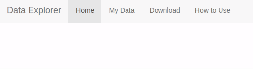

✨ An Introduction to UI/UX in Shiny✨
Mandy Norrbo (@MandyNorrbo)
Who am I?
Background in Psychology
Data scientist @ Jumping Rivers
R & Shiny development for clients in a variety of fields
Teach beginner & advanced R programming courses
What is Shiny?
- R framework for creating web apps
- An app consists of UI (front end) and server (back end)
- Mainly used by data professionals to build dashboards
- Entry point into web development

What is UI/UX?
User Interface üé®
- Visual design
- Colours, fonts, layouts, images
User Experience üñ±
- Interaction design
- Usability, accessiblity, user research & testing
Difficult to separate as they both feed into each other
Large fields in their own right
- I will try to cover some basic principles within the context of Shiny apps
Web basics: front end
HTML: structure
CSS: style
JavaScript: interactivity

Shiny generates HTML, CSS, and JavaScript for you
Can inspect the underlying web technologies using the Developer Tools in browser
üîß Demo: A simple Shiny app üîß
- App that prints a random US state when you click a button
- Let’s look at HTML/CSS/JavaScript in Developer Tools
With that out the way…
UI/UX design principles
- Accessibility ü´Ç
- Feedback to the User ✅
- Help and Documentation üìú
- Responsive design üì±
- Hierarchy and Chronology üìë
- Less is More ü§è
- Let’s see how many of these we can cover today
1. Accessibility
Accessiblity on the web
- Ensuring there are no barriers that prevent interaction with or access to the content of your app
- Potential barriers:
- Dyslexia, colorblindness, visual or hearing impairments, motor or cognitive impairments and more
- You can improve:
- Contrast, colour palettes, font sizes, screen reader compatibility, alternative text, not relying on mouse inputs, transcripts for audio, semantic HTML
Accessibility
Available guidelines & tool
Web Content Accessibility Guidelines (WCAG)
- Currently WCAG 2, WCAG 3 is in progress
-
- Community-driven effort to make digital accessiblity easier
Lighthouse report in Chrome Developer Tools
WAVE evaluation browser extension
Accessibility
üîß Demo: Accessibility tools üîß

Accessibility
Accessibility in Shiny üíª
You can run browser-based reports on Shiny apps
Shiny generates HTML for you
- Modifying HTML directly is more difficult
renderPlotnow has analtargument for alternative textColors, fonts, contrast etc. can all be modified using CSS
R packages: {shinya11y}, {BrailleR}, {sonify}, {tactileR}
Accessibility
üîß Demo: Board game app üîß
Adding alt text
Generating a Ligthouse report
Fixing issues from Lighthouse report
Accessibility
2. Feedback to the User
Every action has a reaction
- Feedback communicates the result of any interaction
Process
- Process ongoing
- Correct/incorrect input
- Action has worked/failed
- Items are clickable
Example feedback
- Downloading…
- Enter a valid phone number
- Progress saved!
- Cursor and colour change
- Also: loading spinners, tooltips, progress bars

Feedback to the User
Why important?
Lack of feedback leaves the user confused
- Might give up, refresh the whole page, keep clicking a button several times
Feedback needs to be both visible and understandable
Response should be proportional to action
- Small action ➜ Small response
- e.g. don’t need to say “Button clicked!”
- Small action ➜ Small response
Feedback to the User
In Shiny: built-in
Buttons, links etc. already give sensible visual feedback (colour change) at clicking/hovering
If e.g. plot fails, will send through R error message
- Can provide custom error message with
validate()
- Can provide custom error message with
showModal()to display a pop-up modalwithProgress()to show progress barshowNotification()to display a notification
Feedback to the User
In Shiny: add-ons
{shinycssloaders} to add loading spinners to individual elements
{waiter} to add loading screen for entire app
{tippy} to add tooltip pop-up message
Feedback to the User
{shinycssloaders}
Feedback to the User
{waiter}
Feedback to the User
{tippy}
Feedback to the User
üîß Demo: Board game app üîß
- Improving feedback when no games were found
- Should prompt user to update search criteria
Feedback to the User
3. Help and Documentation
Getting help
Users generally want to navigate a product without resorting to documentation
Any help should be easy to locate and focused on the users’ current task
ℹ️ Where might your user get stuck?
ℹ️ What questions might your user ask?
Help and Documentation
Basics
Include a “Help” or “How to Use” tab
Provide enough context for any included visualisations
Consider who the user is, and what their knowledge of the subject/content will be
User testing: how does a user interact with the app
- If you can, get an actual end user
- If not, a colleague or friend might work
Help and Documentation
In Shiny: add-ons
{cicerone} to create guided tours of Shiny applications
{shinyhelper} for adding help next to certain inputs
{faq} to create a Frequently Asked Questions component
Help and Documentation
{cicerone}
Help and Documentation
{shinyhelper}
Help and Documentation
{faq}
Help and Documentation
üîß Demo: Board game app üîß
- Adding {shinyhelper} help at “min. age input”
Help and Documentation
4. Responsive Design
What is responsive design? üñ•Ô∏èÔ∏èüíªÔ∏èüì±
Responsive web design is about creating web pages that look good on all devices
Users might be accessing your app with a laptop, a tablet, or their phone
A responsive web design will automatically adjust for different screen sizes and viewports
Responsive Design
Guidelines and tools
- Developer tools allow you to view your web page with different dimensions and even specific devices
- You can also try rotating the screen (as if you were rotating your phone screen) and zooming in on the device as well as use “touch screen”
Responsive Design
Shiny and responsive design
Default layout
fluidPageshould resize with windowAvoid hard coding widths and heights in centimetres or inches
- Instead use relative units e.g. percentages
Responsive Design
Mobile compatibility in Shiny
Responsive Design
üîß Demo: Board game app üîß
- Try out different screen sizes in developer tools
Responsive Design
5. Hierarchy and Chronology
Structuring your content
- Visual hierarchy allows the user to process information by importance
- The mind can group and prioritise elements to give them a specific order
- If no hierarchy, much greater effort in navigation
Hierarchy and Chronology
Where to look? üëÄ
Hierarchy and Chronology
How to create hierarchy
- Size ➕: The larger the element, the more it will attract attention
- Colour üé®: Bright colours stand out more than muted tones
- AlignmentÔ∏è üìè: Any element that separates from the alignment of the others will attract attention
- Negative space ⬜: The more space around the element, the more attention it generates
Hierarchy and Chronology
In Shiny
- Use h1-h5 headings effectively
- Structuring your content into sections/tabs to avoid all content on a single page
- e.g.
navBarPage()
- e.g.
- Highlighting important outputs/inputs with size/color/position, and placing less important elements to the side/hidden unless requested

Hierarchy and Chronology
üîß Demo: Board game app üîß
- Distinguish the “Find board game” button from the “+ More options” button using size/colour
Hierarchy and Chronology
6. Less is More
Reduce complexity üßò
- As you’re learning about cool packages in Shiny, it’s easy to add features just because
- The more you add, the more difficult your app will be to interact with for the user (increased cognitive load)
- It may also slow down the app itself!
Less is More
Keep only what’s essential
- What is essential for the usage of your app?
- Make sure it is easy to perform those basic actions, before adding any other features
- You can use hierarchy/chronology to emphasise that basic user journey
- Make sure it is easy to perform those basic actions, before adding any other features
Less is More
In Shiny
- Avoid unnecessary interactivity
- e.g. only use {plotly} when there’s a reason to
- Hide “advanced” inputs not necessary for basic use
- e.g. extra filters when searching for a hotel room
Less is More
üîß Demo: Board game app üîß
- Add min. age input into “+ More options”
Less is More
This all seems too much!
Don’t worry about meeting all these principles from the get go
Development is an iterative process, and you can always keep improving your app
Also, to even worry about user interface and user experience, you will need to have users first
Thank you! üåª
Twitter: @MandyNorrbo
LinkedIn: Mandy Norrbo
GitHub: mnorrbo
Email: mandy@jumpingrivers.com